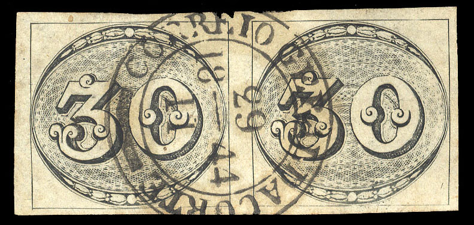

{kind=link}

"CORREIO GERALDACORTE" seems to be a rather common cancel (post of the general court?), it exists with and without circles?
Return To Catalogue - Brazil 1843 issue
Note: on my website many of the
pictures can not be seen! They are of course present in the
catalogue;
contact me if you want to purchase it.
Cancels:

"CORREIO GERALDACORTE" seems to be a rather common
cancel (post of the general court?), it exists with and without
circles?

Arara cancel


Ceara cancel

Mogy Dascruzes cancel.

Pernambuco cancel.

Porte Alegre Sul cancel.

Rio de Contas

"V.DIAMANTINA" cancel in a long ellipse.
Fournier forgeries:

A forged Fournier cancel as can be found in 'The Fournier Album
of Philatelic Forgeries', 'CORREIO GERADACORTE 12(?) 18(?) 8 44'
possibly used on forgeries of this issue. Note that there is no
'L' in 'GERADACORTE' (it should be 'GERALDACORTE').
Sperati forgeries (60 r and 90 r only):

Cancels used by Sperati, reduced sizes; note that the cancel
'14/9 1844' is missing
Sperati forgery of the 90 r value with applied cancel (reduced
sizes)

Front and backside of a Sperati forgery of the 60 c value with a
red 'VICTORIA' cancel; I've also seen the 60 c Sperati forgery
with a black 'VICTORIA' cancel.